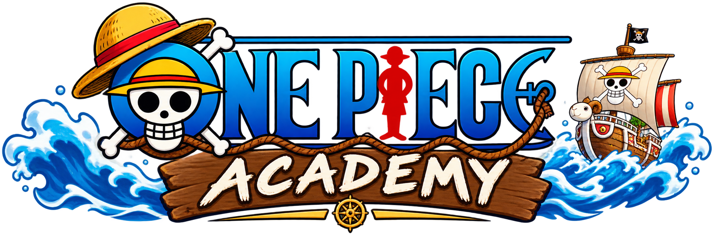

welcome to one piece academy here we will train how to become a pirate
In this vedio,we will show how to become a pirate and detail about orgin of devil fruit and haki.Here haki and devil fruits are the important in the one piece world we want to learn about the power of haki and devil fruit.In one piece world marines are the ruler of the world they are conquere the world and rule the sea basically one piece world are 90% filled with water so there are haki power user have the advantage in the one piece world and devil fruit user cannot swim in the water they where drown in the water but fishman have advatage in the water they can breath but they cannot swim if they are eat devil fruit but there are some over power devil fruit are have in one piece world(Sun God Nika Modern Human fruit)
You can understand the types of devil fruit and haki One Piece is a Japanese manga series written and illustrated by Eiichiro Oda. It follows the adventures of Monkey D. Luffy and his crew, the Straw Hat Pirates, as he explores the Grand Line in search of the mythical treasure known as the "One Piece" to become the next King of the Pirates.
| Logia | Paramecia | Zoan |
| Yami Yami no mi | Gura Gura no mi | Hito Hito no mi |
Register for a Training | Instagram | YouTube